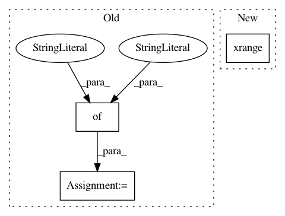

bc3343ccf075e2feef0ca832a48ef2cd16335d99,tensorforce/core/baselines/mlp.py,MLPBaseline,create_tf_operations,#MLPBaseline#Any#,38
Before Change
self.state = tf.placeholder(dtype=tf.float32, shape=(None, util.prod(next(iter(config.states))[1].shape)))
self.returns = tf.placeholder(dtype=tf.float32, shape=(None,))
network_builder = layered_network_builder((
{"type": "dense", "size": self.size},
{"type": "dense", "size": self.size},
{"type": "linear", "size": 1})
)
network = NeuralNetwork(network_builder=network_builder, inputs=dict(state=self.state))
self.prediction = network.output
After Change
self.returns = tf.placeholder(dtype=tf.float32, shape=(None,))
layers = []
for _ in xrange(self.hidden_layers):
layers.append({"type": "dense", "size": self.size})
layers.append({"type": "linear", "size": 1})
In pattern: SUPERPATTERN
Frequency: 3
Non-data size: 3
Instances
Project Name: reinforceio/tensorforce
Commit Name: bc3343ccf075e2feef0ca832a48ef2cd16335d99
Time: 2017-07-29
Author: mi.schaarschmidt@gmail.com
File Name: tensorforce/core/baselines/mlp.py
Class Name: MLPBaseline
Method Name: create_tf_operations
Project Name: hellohaptik/chatbot_ner
Commit Name: 6140cbd632d9e5c835cb6feaf3f7f7420facbe47
Time: 2019-01-13
Author: jatin.parekh@haptik.co
File Name: datastore/elastic_search/query.py
Class Name:
Method Name: get_dictionary_records
Project Name: snipsco/snips-nlu
Commit Name: afdea12c4ed624504cf53458087555cf47832371
Time: 2017-03-28
Author: alice.coucke@gmail.com
File Name: snips_nlu/intent_classifier/data_augmentation.py
Class Name:
Method Name: augment_dataset